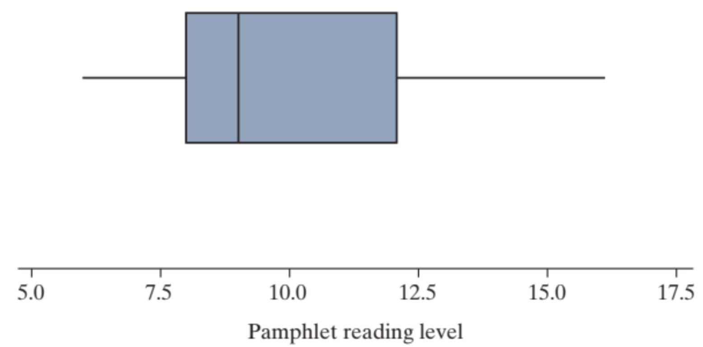

7-1 : Comparing two groups: Quantitative response
MAT 2100: Introduction to Statistics
Grace College
Last updated September 24, 2024
The Jesus Creed
Hear, O Israel: The Lord our God, the Lord is one.
Love the Lord your God with all your heart and with all
your soul and with all your mind and with all your strength.
The second is this: Love your neighbor as yourself.
A worksheet for Grace College from Zybooks
Cancer Pamphlets
Researchers in Philadelphia investigated whether pamphlets containing informa- tion for cancer patients are written at a level that the cancer patients can compre- hend (Short, Moriarty, and Cooley, 1995). First, they measured the readability of a sample of cancer pamphlets based on factors such as the length of sentences and the number of polysyllabic words, assigning each pamphlet a grade level. The results shown below are presented as a frequency table, reporting the number of pamphlets at each grade level.
Table 1:
| Pamphlets’ readability levels | 6 | 7 | 8 | 9 | 10 | 11 | 12 | 13 | 14 | 15 | 16 |
| Count (number of pamphlets) | 3 | 3 | 8 | 4 | 1 | 1 | 4 | 2 | 1 | 2 | 1 |
Exercise 1
What are the observational units in the table above? How many observational units were measured?
Exercise 2
Use the information in the table above to construct a histogram of the pamphlets’ readability levels. How would you summarize the behavior of this histogram?
Exercise 3
Using the information in the table above, calculate the mean pamphlet readability level. (Hint: Add up the values, 6 + 6 + 6 + 7 + … + 15 + 15 + 16 and divide by the number of observational units.)
Exercise 4
Using the information in the table above, calculate the median pamphlet readability level. How many observations are on each side of this median value (including the repeat values)? (Hint: What is the position of the median?)
Exercise 5
How do the mean and median compare? Is this what you would have predicted from the histogram? Explain briefly.
While the mean and median tell us about the center of the distribution, one way to sum- marize the behavior of the distribution of a quantitative variable is by dividing the distribution into four pieces of roughly equal size (number of observations). In other words, summarize the distribution by determining where the bottom 25% of the data are, the next 25%, the next 25%, and then the top 25%.
Definition 2:
Definition ():
The value for which 25% of the data lie below that value is called the lower quartile (or 25th percentile). Similarly, the value for which 25% of the data lie above that value is called the upper quartile (or 75th percentile). Quartiles can be calculated by determining the median of the values above/below the location of the overall median. The difference between the quartiles is called the inter-quartile range (IQR), another measure of variability along with standard deviation.Exercise 6
Take the 15 values below the position of the median, and find the median of those 15 values. This is the lower quartile.
Exercise 7
Repeat for the 15 values above the position of the median. This is the upper quartile.
Exercise 8
Calculate and interpret the inter-quartile range.
Exercise 9
Explain why the inter-quartile range might be preferred to the standard deviation to summarize the variability in the pamphlet reading levels.
Remark 3:
Key Idea .
The minimum, lower quartile, median, upper quartile, and maximum comprise the five-number summary. A visual representation of the five-number summary is a boxplot. The figure below shows a boxplot for these data.
Figure 4:

Definition 5:
Definition ():
A boxplot is a visual display of the five-number summary. The box displays the middle 50% of the distribution, and its width (the IQR) helps us visualize the spread of the distribution; the whiskers extend to the smallest and largest values in the dataset.Exercise 10
How does the boxplot match up to the five-number summary? (Endpoint of lower whisker, lower edge of box, line within the box, upper edge of box, upper whisker).
The boxplot illustrates that there is some variability in the pamphlet reading levels. What the researchers wanted to know was how these different reading levels matched up to the reading ability of the cancer patients. The table below shows a frequency table for the reading level (again a grade level) for 63 cancer patients. Note that patient reading levels of under 3rd grade and above 12th grade are not determined exactly.
Table 6:
| Patients’ reading levels | <3 | 3 | 4 | 5 | 6 | 7 | 8 | 9 | 10 | 11 | 12 | >12 | Total |
|---|---|---|---|---|---|---|---|---|---|---|---|---|---|
| Count (number of patients) | 6 | 4 | 4 | 3 | 3 | 2 | 6 | 5 | 4 | 7 | 2 | 17 | 63 |
Exercise 11
Explain why it is not possible to calculate the mean reading ability for these patients.
Exercise 12
Explain why it is possible to calculate the median reading ability for these patients and do so.
Exercise 13
How does the median reading level of the patients compare to the median reading level of the pamphlets? Does this indicate that the pamphlets are a good match to the cancer patients? Explain.
Exercise 14
Determine and interpret the lower quartile for the patient reading levels.
Exercise 15
How does the lower quartile of patient reading levels compare to the lower quartile of the reading level of the cancer pamphlets? How does the lower quartile of patient reading levels compare to the minimum reading level of the cancer pamphlets?
Exercise 16
Use your answer to question [REF=TODO] to decide whether the cancer pamphlets are a good match to patient reading levels. (Hint: Interpret the second comparison in [REF=TODO] in context.)
Later in this chapter, you will learn formal methods for assessing whether the centers of two distributions are statistically significantly different. But notice how such analysis may not be valid for a study like this:
- Means are not the most important feature to be comparing. For example, means will be influenced by outliers, and these data were not presented in a way to allow for calculation of means.
- We could focus on comparing the medians instead, but only comparing the centers of these distributions ignores the variability in the distributions, which is perhaps of more interest to these research questions.
- We don’t know whether the pamphlets or patients are randomly sampled from larger populations.
This exploration reveals that measures of center do not always tell the whole story when you are analyzing data to address a particular research question. In this case, the research question of whether pamphlets’ readability levels are well aligned with patients’ reading lev- els requires looking at the entire distributions, not simply at measures of center. Examining displays of the distributions would be a better place to begin. In addition to dotplots and histograms, boxplots are another potential type of display that is especially useful for comparing distributions. But keep in mind, as shown in a previous exploration, that they can sometimes mask important features of distributions. Many software packages now allow you to overlay a boxplot on top of a histogram or dotplot to help see the entire distribution while highlighting key features like the quartiles.